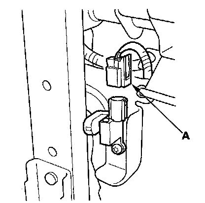
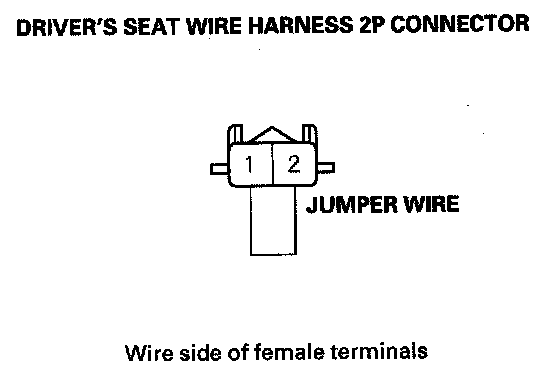
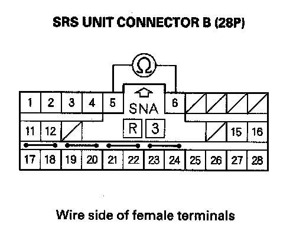

DTC 71-1x
DTC 71-1x ("x" can be 0 thru 9 or A thru F): Open in Driver's Seat Position SensorNOTE: Before doing this troubleshooting procedure, review SRS Precautions and Procedures.
1. Erase the DTC memory.
2. Turn the ignition switch ON (II), and check that the SRS indicator comes on for about 6 seconds and then goes off.
Does the SRS indicator stay on, and is DTC 71-1x indicated?
YES - Go to step 3.
NO - Intermittent failure, the system is OK at this time. Go to Troubleshooting Intermittent Failures. If another DTC is indicated, go to the DTC Troubleshooting Index.
3. Check the connection between the driver's seat wire harness 2P connector and the driver's seat position sensor.
4. Erase the DTC memory.
5. Read the DTC.
Is DTC 71-1x indicated?
YES - Go to step 6.
NO - Intermittent failure, the system is OK at this time. Go to Troubleshooting Intermittent Failures. If another DTC is indicated, go to the DTC Troubleshooting Index.
6. Turn the ignition switch OFF. Disconnect the negative cable from the battery, and wait for 3 minutes.

7. Disconnect the driver's seat wire harness 2P connector from the driver's seat position sensor (A).

8. Connect the No. 1 and No. 2 terminals of the driver's seat wire harness 2P connector with a jumper wire.
9. Disconnect both seat belt tensioner connectors.
10. Disconnect SRS unit connector B (28P) from the SRS unit.

11. Measure the resistance between the No. 5 and No. 6 terminals of SRS unit connector B (28P). There should be 0 - 1.0 ohm.
Is the resistance as specified?
YES - Faulty driver's seat position sensor or SRS unit; replace the driver's seat position sensor. If the problem is still present, replace the SRS unit.
NO - Open in the floor wire harness or the driver's seat wire harness; replace the faulty harness.